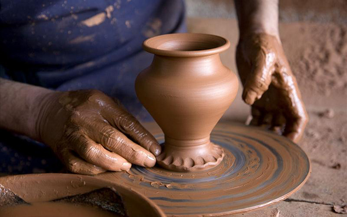

14 – 16 Novembre 2026
Jornades
d'Artesania
Barcelona
Tradició, creativitat i ofici artesanal

14 – 16 Novembre 2026
Tradició, creativitat i ofici artesanal
Tres dies d'immersió en el món de l'artesania. Xerrades de ponents internacionals, tallers pràctics i una exposició col·lectiva al Centre Cultural de la Vila de Barcelona.
Un espai per aprendre, compartir i celebrar els oficis artesanals que formen part del nostre patrimoni cultural.